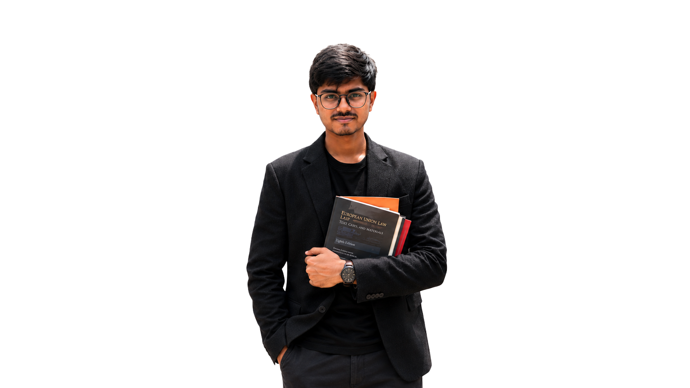
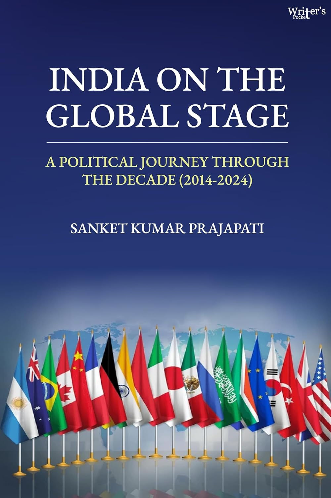

Latest publication
Centre for European Studies · JNU
Sanket Kumar
Prajapati
PhD Research Scholar
Researching digital governance, the European Union, AI governance, India–EU relations, and international political economy.

Latest policy article
What explains Europe’s continued role in high-stakes diplomacy
The Indian Express · July 2026Read article →Current research project
EU regulatory power in the global digital order
Doctoral research · Centre for European Studies, JNUExplore project →Published in · Indexed in
Research impact
Research profile
Rules, norms, and power across borders.
My work examines how the European Union’s digital regulatory framework shapes global order, and how India and other actors adapt, contest, and cooperate with those rules.

Writers Pocket · 2024
India on the
Global Stage
A Political Journey Through the Decade (2014–2024)
In this authored book, Sanket Kumar Prajapati traces India’s political journey across a consequential decade, placing domestic transformation in conversation with the country’s changing global role.
View book & purchasing options ↗Latest news
Research updates
July 2026 — Invited to write for Diplomacy and Beyond Plus on India–Latvia economic relations.
July 2026 — Article published in The Indian Express.
July 2026 — Article published in The International Spectator.
July 2026 — Opinion published in Hindustan Times.
June 2026 — Invited to HPAIR Asia Conference.
November 2025 — Conference paper presented on cyber security and India–Europe cooperation.
Public writing
Latest media writings
 The Indian Express · July 2026
The Indian Express · July 2026Europe’s continued role in high-stakes diplomacy
 The Indian Express · July 2026
The Indian Express · July 2026Europe on the margins of mediation in consequential conflicts
 Hindustan Times · June 2026
Hindustan Times · June 2026EU–India trade deal: The path ahead
 Hindustan Times
Hindustan TimesFrom Nice: A partnership built on trust
 South Asia Monitor
South Asia MonitorBetween melody, moment and hard work ahead
 Jansatta · Opinion
Jansatta · Opinion